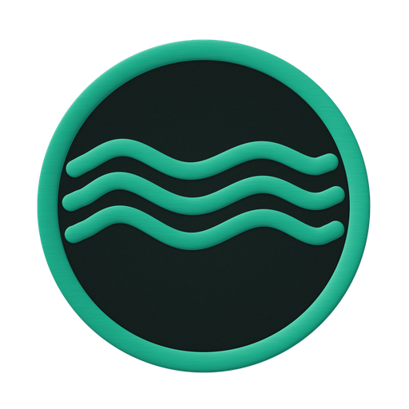

MANUAL MAESTRO · GUÍA VISUAL, TÉCNICA Y DE IMPLEMENTACIÓN
01
Ecosistema Anclora
Un sistema compartido para un mayor impacto real.
Sistema de Diseño Anclora
V1 · 1.0.0Manual maestro del ecosistema
Referencia profesional para diseñar, construir y ampliar el ecosistema de aplicaciones Anclora.
Este documento sirve como guía de trabajo para desarrolladores, diseñadores y modelos de IA/LLM. Resume los fundamentos, componentes, perfiles, patrones, reglas de implementación y criterios de gobernanza del paquete @anclora/design-system en su versión 1.0.0.
Fundamentos
Perfiles
Componentes
Patrones
Implementación
Gobernanza
Qué encontrarás en esta guía
Una referencia común para construir el futuro del ecosistema Anclora.
I
Apertura y contratoVisión, uso del manual, taxonomía y perfiles · págs. 2–6
II
Identidad y fundamentosMarca, tipografía, color y espaciado · págs. 7–13
III
ComponentesBotones, formularios, tablas, estados del sistema, capas y accesibilidad · págs. 14–20
IV
Arquitectura de productoEstructura de aplicación, P-WKS, P-MKT y patrones · págs. 21–24
V
Ecosistema y adopciónConsumidores, adopción, gobernanza y migración · págs. 25–28
VI
Apéndice y cierreRetícula del manual, guía para LLM y lista final · págs. 29–30
Paquete
@anclora/design-system
Versión
1.0.0 · tag v1.0.0
Contrato
Basado en CSS
Accesibilidad
WCAG 2.2 AA
Idiomas
ES / EN
VERSIÓN
1.0.0
ORGANIZACIÓN
Anclora Group
DOCUMENTO
Manual maestro del ecosistema
UN MISMO HORIZONTE
SISTEMA DE DISEÑO ANCLORA V1
MANUAL MAESTRO · GUÍA VISUAL, TÉCNICA Y DE IMPLEMENTACIÓN
02
Parte I · Apertura y contrato
Visión general del sistema de diseño
Un contrato común que separa lo compartido de lo que pertenece a cada producto.
Propósito y alcance
El Sistema de Diseño Anclora es el contrato común, basado en CSS, que comparte todo el ecosistema. Define los fundamentos semánticos, los componentes visuales canónicos, las reglas de composición por perfil, los patrones reutilizables, los puntos de entrada públicos, las expectativas de accesibilidad y las reglas de migración y compatibilidad.
No es un entorno de ejecución de producto, un sistema de rutas, un sistema de autenticación, una capa de datos, un modelo de permisos ni un motor de flujos de trabajo. Esos ámbitos pertenecen a cada producto.
FundamentosTokens semánticosComponentesPatrones compartidosPerfiles de productoExtensiones de producto
Qué pertenece al sistema
Tokens semánticos, fundamentos y contrato de temas claro/oscuro.
Anatomía estable de componentes y sus estados genéricos.
Reglas de composición de perfiles y patrones neutrales de dominio.
Exportaciones públicas, compatibilidad, obsolescencia y verificación.
Qué pertenece al producto
Rutas, textos, etiquetas, datos, persistencia y llamadas a API.
Autenticación, permisos, estado de negocio y flujos de dominio.
Gestión en ejecución del foco y del posicionamiento, colas, temporizadores y portales.
Composición e identidad propias en los puntos de extensión documentados.
Modelo por capas
Gobernanza · contratos · infraestructura
Fundamentos→Tokens→Componentes→Patrones→Perfiles
Extensiones de productoConsumidores
Principios
1
El significado semántico es central; la identidad se extiende en puntos documentados.
2
CSS y HTML semántico son el contrato portable; los frameworks son entornos.
3
Los perfiles clasifican arquetipos de interacción, no verticales de negocio.
4
Declarar algo estable exige verificación ejecutable y evidencia de consumidores.
5
Accesibilidad, adaptación a pantallas y textos bilingües forman parte del contrato.
Modelo de autoridad
Detalle en la página 27
Gobernanza, contratos e infraestructura
Definen los límites y las responsabilidades del ecosistema.
Sistema de Diseño Ancloraanclora-design-system
Autoridad ejecutable y canónica de las capas que publica.
Consumidores
Composición, ejecución y lógica de producto. Aportan evidencia, no autoridad.
VERSIÓN
1.0.0
ORGANIZACIÓN
Anclora Group
DOCUMENTO
Manual maestro del ecosistema
UN MISMO HORIZONTE
SISTEMA DE DISEÑO ANCLORA V1
MANUAL MAESTRO · GUÍA VISUAL, TÉCNICA Y DE IMPLEMENTACIÓN
03
Parte I · Apertura y contrato
Cómo usar este manual
Un mismo contrato. Personas y modelos.
Qué es normativo, qué es ilustrativo y cómo deben leerlo un equipo o un modelo de lenguaje.
1
Qué es normativo
Valores con nombre de token, clase o atributo: --radius-md, .ac-button--compact, data-profile.
Estados de madurez en mayúsculas: STABLE, EVIDENCE_REQUIRED…
Reglas «hacer / no hacer» y listas de verificación.
2
Qué es ilustrativo
Maquetas de pantallas, datos de ejemplo, nombres de personas y cifras.
Los colores decorativos del manual (teal, oro, marfil) no son tokens.
Las maquetas usan los tokens reales, pero a escala reducida.
3
Política lingüística
Aplicada en las 30 páginas
Todo lo visible para el lector está en español. El inglés sólo aparece cuando es un identificador técnico que el desarrollador o el LLM debe usar literalmente.
Barra lateral
Identificador: Sidebar
Panel lateral
Componente canónico: drawer
Carga de archivos
ID de patrón: file-upload
Confirmación destructiva
ID: destructive-confirmation
4
Convenciones de madurez
design-system.manifest.json
STABLE
Contrato verificado y respaldado por consumidores reales. Consúmelo; no lo rehagas.
CONSUMER_VALIDATED
Patrón validado en consumidores reales; aún sin el estatus estable.
CANONICAL_NEEDS_MORE_ RUNTIME_EVIDENCE
CSS canónico con evidencia de uso incompleta. No lo presentes como probado.
EVIDENCE_REQUIRED
Fuera de V1 estable. Requiere auditoría y validación antes de promocionarse.
DEPRECATED
Sólo por compatibilidad hasta cumplir su condición de retirada.
5
Ruta rápida de implementación
1
Identifica el perfil: Core, P-WKS o P-MKT (págs. 4–6).
2
Fija el SHA Git inmutable de V1; nunca main, development ni latest.
3
Importa @anclora/design-system/system.css.
4
Declara data-theme y, si procede, data-profile en la raíz.
5
Compón primitivas y patrones canónicos; extiende sólo donde está sancionado.
6
Valida en navegador real: adaptación a pantallas, ES/EN y accesibilidad.
6
Si hay conflicto
El manual es una guía derivada. Ante cualquier discrepancia prevalece el repositorio, en este orden:
1
design-system.manifest.json
2
Exportaciones de package.json y src/system.css
3
CSS canónico en src/
4
Documentación normativa del repositorio
El conflicto se señala y se resuelve; nunca se inventa un tercer contrato.
VERSIÓN
1.0.0
ORGANIZACIÓN
Anclora Group
DOCUMENTO
Manual maestro del ecosistema
UN MISMO HORIZONTE
SISTEMA DE DISEÑO ANCLORA V1
MANUAL MAESTRO · GUÍA VISUAL, TÉCNICA Y DE IMPLEMENTACIÓN
04
Parte I · Apertura y contrato
Taxonomía del sistema
Cuatro decisiones independientes: estructura, identidad, tema y producto. Ninguna sustituye a otra.
Cuatro ejes · un mismo producto
Se combinan libremente
PERFIL
¿Cómo se usa la superficie?
data-profile
Coreatributo omitido
P-WKS"workspace" · espacio de trabajo
P-MKT"marketing" · página pública
NIVEL DE IDENTIDAD
¿Qué intensidad de marca?
.tier-*
Internotier-internal · operativo
Portfoliotier-portfolio · escaparate
Premiumtier-premium
Ultra premiumtier-ultra-premium
MicroSaaStier-microsaas · utilidad enfocada
TEMA
¿Claro u oscuro?
data-theme
Oscuro"dark" · también sin atributo
Claro"light" · canónico desde 0.7.0
PRODUCTO
¿Qué acento de marca?
.product-anclora-*
Acentofija --accent desde --coin-*
Familia tipográficasans, internal o portfolio
Perfil, nivel, tema y producto son independientes: un mismo producto puede ser P-WKS, premium, claro y con su propio acento a la vez.
Cómo decidir cada eje
Perfil
Estructura autenticada y persistente → P-WKS. Narrativa pública → P-MKT. Ninguno de los dos → Core.
Nivel (tier)
Lo fija el contrato de marca de la aplicación en la bóveda de gobernanza, no el equipo que implementa.
Tema
Decisión de producto. Si admite ambos, alterna data-theme; nunca crea un tema local.
Producto
Usa la clase existente en src/themes/product.css. Si no existe, se registra la carencia; no se inventa un acento.
Un repositorio puede tener varias raíces con perfiles distintos, nunca anidadas.
3
Un producto con un solo tema puede omitir el selector de tema.
El acento lo aporta el producto
src/themes/product.css → --accent
Grupo
Acción
Enlace de texto
--coin-group
#a8aeb8
Command Center
Acción
Enlace de texto
--coin-command
#6c63ff
Content Generator AI
Acción
Enlace de texto
--internal-coral
#e06848
Advisor AI
Acción
Enlace de texto
--coin-advisor
#1dab89
Private Estates
Acción
Enlace de texto
--coin-pe
#d4af37
Group Landing
Acción
Enlace de texto
--signal-blue
#5fa8ff
El acento sirve para rellenos, iconos y decoración. Como texto se usa su derivado --text-link (oscuro: color-mix(accent 80%, blanco 20%); claro: acento oscurecido), verificado a 4,5:1.
Qué puede variar
Producto: acento, logotipo, iconografía, textos y composición.
P-WKS: densidad de componentes (.ac-button--compact) y valores por defecto de la estructura.
P-MKT: espaciado más holgado, énfasis de la cabecera principal y de la llamada a la acción, familia de titulares y cabecera pública.
Qué no puede variar
Significado semántico del color y de los estados.
Radios base, foco y estado deshabilitado.
Contrato de tema claro/oscuro y semántica de navegación Core.
Anatomía base de los componentes.
VERSIÓN
1.0.0
ORGANIZACIÓN
Anclora Group
DOCUMENTO
Manual maestro del ecosistema
UN MISMO HORIZONTE
SISTEMA DE DISEÑO ANCLORA V1
MANUAL MAESTRO · GUÍA VISUAL, TÉCNICA Y DE IMPLEMENTACIÓN
06
Parte I · Apertura y contrato
Arquitectura visual típica
Un mismo sistema semántico impulsa un espacio de trabajo P-WKS y una página pública P-MKT.
P-WKS · Espacio de trabajo
Aplicación autenticada con navegación persistente y alta densidad. data-profile="workspace"
ANCLORA
Inicio
Organización
Personas
Productos
Procesos
Datos
Informes
Ajustes
Buscar…
JD
Operaciones › Productos
Vista operativa
Seguimiento en tiempo real del ecosistema.
Productos
248
Personas
156
Procesos
32
Estados
12
Productos+ Nuevo
ID
Nombre
Estado
Actualizado
PRD-001
Plataforma Core
● Activo
12 mar
PRD-002
Portal Clientes
● En revisión
11 mar
PRD-003
Módulo Analítica
● Advertencia
08 mar
PRD-004
API Integración
● Activo
06 mar
PRD-005
Gestor Contenidos
● Activo
04 mar
PRD-006
Portal Socios
● En revisión
02 mar
PRD-007
Motor Informes
● Error
28 feb
PRD-008
Archivo Legal
● Activo
27 feb
PRD-009
Panel Ejecutivo
● Advertencia
25 feb
Mostrando 1–9 de 248‹ 1 2 3 … 28 ›
Actividad reciente
Estado del sistema
● 99,9 % disponible
1
Barra lateral persistente para la navegación principal.
2
Rutas como enlaces con aria-current="page".
3
Densidad alta con jerarquía visual clara.
P-MKT · Página pública
Superficie narrativa de desplazamiento único, sin autenticación. data-profile="marketing"
Tecnología para un impacto real en personas, organizaciones y ecosistemas.
Conocer más →
Soluciones para un futuro compartido
Personas, tecnología y propósito en un mismo ecosistema.
Personas
Experiencias que conectan.
Ecosistema
Soluciones que integran.
Impacto real
Resultados que trascienden.
Un mismo horizonte de oportunidades
Explorar soluciones →
ANCLORASoluciones · Personas · Contacto · Privacidad
1
Cabecera pública ligera con anclas o rutas públicas y CTA.
2
Narrativa editorial con jerarquía visual clara.
3
Sin barra lateral ni densidad de espacio de trabajo.
Ambos comparten tokens, foco, enlaces, tema y semántica. Una aplicación híbrida puede incluir una sección P-MKT dentro de P-WKS: el perfil gobierna la estructura dominante, no cada página aislada.
VERSIÓN
1.0.0
ORGANIZACIÓN
Anclora Group
DOCUMENTO
Manual maestro del ecosistema
UN MISMO HORIZONTE
SISTEMA DE DISEÑO ANCLORA V1
MANUAL MAESTRO · GUÍA VISUAL, TÉCNICA Y DE IMPLEMENTACIÓN
07
Parte II · Identidad y fundamentos
Sistema de marca y logotipo
La identidad del ecosistema parte de una medalla compartida y de unas reglas de uso coherentes.
Elementos del logotipo maestro
Brand book Anclora Group · §4
1. Medalla
Círculo, anillo metálico, fondo navy y tres ondas de plata.
2. Logotipo tipográfico
«Anclora Group» en DM Sans ExtraBold (800).
#0A1F3D sobre claro · #F8FAFC sobre oscuro
3. Logotipo compuesto horizontal
Medalla a la izquierda y logotipo centrado a su derecha. Uso principal.
4. Logotipo compuesto vertical
Medalla arriba y logotipo debajo.
5. Protección y tamaño
Margen mínimo: 20 % del diámetro. Tamaño mínimo legible: 24 px de diámetro.
20 %
24 px
Usos correctos
1. Sobre claro Versión horizontal principal.
2. Sobre oscuro Versión con texto claro.
3. Sobre imagen Con capa que asegure contraste.
4. Monocromo Una tinta, escala reducida.
Usos incorrectos
No deformar la medalla.
No recolorear las ondas.
No añadir sombras ni efectos.
No usar sobre bajo contraste.
Reglas de identidad
1
UnidadMedalla y logotipo tipográfico forman un conjunto.
2
ProporciónNo deformar el círculo ni recortar el anillo.
3
ColorOndas sólo en plata o blanco sobre navy.
4
RelieveSin sombras extra: el metal ya aporta profundidad.
5
LegibilidadContraste suficiente y 24 px como mínimo.
Firma de producto
assets/logos/ del sistema de diseño
Cada producto conserva su propio logotipo del catálogo de assets/logos/; la medalla de Anclora Group identifica a la entidad matriz.
Anclora Group
Command Center
Content Generator AI

FileStudio
Talent
Private Estates
VERSIÓN
1.0.0
ORGANIZACIÓN
Anclora Group
DOCUMENTO
Manual maestro del ecosistema
UN MISMO HORIZONTE
SISTEMA DE DISEÑO ANCLORA V1
MANUAL MAESTRO · GUÍA VISUAL, TÉCNICA Y DE IMPLEMENTACIÓN
08
Parte II · Identidad y fundamentos
Familias de marca
Tres familias cromáticas comparten una base común. Una familia no es un perfil ni un nivel.
Grupo · entidad matriz
Resumen del ecosistema
Productos
26
Referencia
7
Explorar
Plata monocromática sobre tinta profunda. Identidad raíz del ecosistema.
--group-ink
#0f1520
--group-surface
#1a2230
--group-silver · --coin-group
#a8aeb8
Tipografía: Fraunces + Inter.
Productos:.product-anclora-group
Portfolio · escaparate
Espacios que inspiran
Narrativa editorial para activos singulares y presentación pública.
Explorar
Marfil, navy y oro. Narrativa editorial y presentación pública.
Base cálida, coral y salvia. Herramientas internas de alta densidad.
--internal-base
#120f0d
--internal-coral
#e06848
--internal-sage
#5a9a78
Tipografía: Inter (--font-internal).
Productos:.anclora-internal, content-generator-ai
Tokens de acción
Uso restringido a botones y enlaces
--anchor-navy
#0a1f3d
--deep-ocean
#111827
--command-purple
#6c63ff
--signal-blue
#5fa8ff
--harbor-mist
#cbd5e1
No sustituyen al acento de identidad del tema, que se mantiene en --coin-group (plata).
Carencias registradas
MISSING_VARIANT
Consulting
MISSING_VARIANT
Labs / I+D
No se crean tokens para estas unidades hasta que exista un contrato de marca.
Familia, perfil y nivel: tres cosas distintas
Familia de marca
Paleta y tipografía de identidad (Grupo, Portfolio, Interna). La aplica la clase .product-*.
Perfil
Estructura de interacción (Core, P-WKS, P-MKT). Nunca aporta color.
Nivel (tier)
Intensidad y ritmo (internal, portfolio, premium, ultra premium).
Ejemplo: un producto de la familia Portfolio puede ser P-MKT y de nivel premium; un producto de la familia Interna puede ser P-WKS y de nivel interno. Las combinaciones no se deducen unas de otras.
VERSIÓN
1.0.0
ORGANIZACIÓN
Anclora Group
DOCUMENTO
Manual maestro del ecosistema
UN MISMO HORIZONTE
SISTEMA DE DISEÑO ANCLORA V1
MANUAL MAESTRO · GUÍA VISUAL, TÉCNICA Y DE IMPLEMENTACIÓN
09
Parte II · Identidad y fundamentos
Fundamentos visuales
Resumen de la base compartida. La especificación completa está en las páginas 10 a 13.
1
Tipografía
Detalle · págs. 10–11
Visión Anclora
Titular de portadaFraunces 600 · 2,6–4,7 rem
Diseño con propósito
SecciónFraunces 600 · 1,8–2,4 rem
Ecosistema en acción
BloqueFraunces 600 · 1,25–1,55 rem
Un sistema, múltiples productos.
CuerpoInter 400 · 1 rem / 1,72
ANTETÍTULO
AntetítuloInter 700 · 0,76 rem · 0,22 em
2
Roles de color
Detalle · pág. 12
Rol
Oscuro
Claro
Lienzo--bg
#0f1520
#f3f5f8
Superficie--bg-raised
#1a2230
#ffffff
Texto--fg1
#ecf0f5
#10141c
Acento--accent
#a8aeb8 · invariante por tema
Éxito
borde rgb(82,190,128)
#145c31
Revisión
rgb(144,206,214)
#0e6b73
Advertencia
rgb(212,175,55)
#7a5100
Peligro
rgb(225,87,89)
#b42318
3
Espaciado y radios
Detalle · pág. 13
Espaciado · --space-*
4
8
12
16
24
32
48
64
Radios · --radius-*
sm 12
md 18
lg 24
xl 32
2xl 34
pill 999
4
Tokens de diseño
Contratos reutilizables
--surface-canvas
Superficie principal de la aplicación.
--text-primary
Texto principal de alto contraste.
--action-primary-bg
Fondo de la acción principal (= acento).
--border-control
Borde de controles: ≥ 3:1 garantizado.
--focus-ring
Anillo de foco derivado del acento.
--status-danger-text
Texto de estado de peligro (≥ 4,5:1).
5
Principios de uso
1
Semántica primeroUsa el rol (--text-primary), no el valor.
--coin-syncxml está obsoleto: usa --coin-guesthub.
5
Reglas de uso del color
1
Rol, no valorConsume --status-danger-text, nunca un hex.
2
Acento ≠ textoPara enlaces usa --text-link.
3
Nunca sólo colorAcompaña el estado con texto o icono.
4
Sin bordes localesUsa --status-*-border.
VERSIÓN
1.0.0
ORGANIZACIÓN
Anclora Group
DOCUMENTO
Manual maestro del ecosistema
UN MISMO HORIZONTE
SISTEMA DE DISEÑO ANCLORA V1
MANUAL MAESTRO · GUÍA VISUAL, TÉCNICA Y DE IMPLEMENTACIÓN
13
Parte II · Identidad y fundamentos
Espaciado, radios y composición
La estructura espacial define el ritmo del sistema. V1 fija escalas y contenedores, no una retícula de columnas.
1
Escala de espaciado
--space-*
1 4
2 8
3 12
4 16
5 20
6 24
8 32
10 40
12 48
16 64
20 80
24 96
Sufijo del token arriba, valor en px abajo (1 rem = 16 px). No existen --space-7, -9 ni -11.
2
Ritmo de composición
--card-gap
20 px (--space-5)
--panel-padding
clamp(20 px, 2,4vw, 28 px)
--shell-gutter
clamp(20 px, 4vw, 40 px)
--shell-section-gap
48 px (--space-12)
--content-measure
52 rem de lectura
3
Radios
--radius-* · base no modificable por perfil
--radius-sm
12 px
Botón compacto, campos
--radius-md
18 px
Paneles medios
--radius-lg
24 px
Marcos · --surface-radius-frame
--radius-xl
32 px
Tarjetas y paneles
--radius-2xl
34 px
Superficies amplias
--radius-pill
999 px
Botones, insignias
4
Contenedores de página
ac-page-container[data-width]
standard · estándar · máx. 1200 pxLectura, formularios y densidad media.
wide · amplio · máx. 1440 pxEspacios de trabajo y tablas.
full · completo · 100 %Superficies que gestionan su propio ancho.
Ancho máximo de la estructura: --shell-max-width 1320 px.
5
Bordes y elevación
--border-subtle
Decorativo; sin garantía de contraste.
--border-default
Separadores y contornos.
--border-control
Controles: ≥ 3:1 garantizado.
--shadow-xs … xl
Cinco niveles, de 6/14 a 38/90 px.
Las sombras son invariantes por tema en V1 (limitación documentada).
6
Movimiento
--dur-* · --ease · --motion-*
Rápido
--dur-fast · 160 ms
Estados de control y foco.
Base
--dur-base · 220 ms
Botones, capas contextuales.
Lento
--dur-slow · 360 ms
Énfasis de la cabecera principal.
Curva
cubic-bezier(0.22, 1, 0.36, 1)
Elevación al pasar: −2 px botón, −3 px tarjeta.
Con prefers-reduced-motion se eliminan desplazamientos y animaciones sin perder información ni control.
Sin retícula de columnas normativa. V1 no impone 12 columnas ni puntos de ruptura globales: define espaciado fluido, contenedores y perfiles. Cada producto fija su maquetación; el único valor estructural por defecto es 960 px para la barra lateral P-WKS (pág. 22).
VERSIÓN
1.0.0
ORGANIZACIÓN
Anclora Group
DOCUMENTO
Manual maestro del ecosistema
UN MISMO HORIZONTE
SISTEMA DE DISEÑO ANCLORA V1
MANUAL MAESTRO · GUÍA VISUAL, TÉCNICA Y DE IMPLEMENTACIÓN
14
Parte III · Componentes
Componentes canónicos
Un lenguaje común para experiencias coherentes.
Mapa de familias y estado de madurez. Una pieza estable se consume desde el paquete; nunca se rehace en local.
Familias estables
STABLEcomponentStatus.stable
Acciones
button
Primaria, secundaria, fantasma, destructiva; tamaños pequeño, grande, compacto y sólo icono. · pág. 15
Formularios
formField · field-* · ac-choice-control
Campo, búsqueda, selector, área de texto, casillas, radios e interruptor. · pág. 16
Tabla de datos
dataTable · statusBadge
Tabla nativa, densidad, ordenación, selección e insignias de estado. · pág. 17
Movimiento reducidoSe conserva la información y el control.
Tamaño de objetivoMínimo 24 px (2.5.8); los botones canónicos parten de 36 px.
Internacionalización
Español e inglésLos casos de prueba canónicos cubren ES/EN y textos largos.
ESEN
Textos de longitud variableSin anchos fijos; los botones y etiquetas se adaptan.
Guardar Save changes
Traducción por unidadesEtiqueta, descripción, estado y nombre accesible se traducen juntos; el CSS no concatena fragmentos.
Formatos localesFechas, números y moneda según la configuración regional del producto.
23/09/2026 09/23/2026
Matriz de validación
Anchos de control de calidad · no normativos
Comprobación
Móvil 375/430
Tableta 834
Escritorio 1360
Escritorio 1440
Composición y alcance
✓
✓
✓
✓
Navegación y componentes
✓
✓
✓
✓
Contraste (claro y oscuro)
✓
✓
✓
✓
Teclado y táctil
✓
✓
✓
✓
Textos ES / EN
✓
✓
✓
✓
Son los anchos del navegador de control de calidad del repositorio. El único umbral estructural por defecto es 960 px (barra lateral P-WKS).
Puertas reales
axe sobre el catálogo, incluido el tema claro.
Cálculo de contraste de tokens.
Prueba de humo en navegador real.
Las capturas de referencia son apoyo manual, no una puerta automática.
Lista de revisión antes de entregar
1
Contraste WCAG 2.2 AA en ambos temas.
2
Totalmente operable con teclado.
3
Semántica, referencias y ARIA correctas.
4
Funciona en ES y en EN.
5
Textos largos sin romper la composición.
6
Formatos locales correctos.
7
Validado en móvil, tableta y escritorio.
8
Movimiento reducido respetado.
VERSIÓN
1.0.0
ORGANIZACIÓN
Anclora Group
DOCUMENTO
Manual maestro del ecosistema
UN MISMO HORIZONTE
SISTEMA DE DISEÑO ANCLORA V1
MANUAL MAESTRO · GUÍA VISUAL, TÉCNICA Y DE IMPLEMENTACIÓN
21
Parte IV · Arquitectura de producto
Estructura de aplicación y navegación
Componente canónico: appShell
La estructura organiza navegación, contenido y capas. El sistema aporta la anatomía; el producto, rutas, permisos y datos.
Anatomía canónica
ac-app-shell[data-profile="workspace"]
Enlace «Saltar al contenido»
skip link → #main-content
Barra lateral
sidebar-nav
Enlaces con aria-current="page"
Cuenta y contexto
slot account
ANCLORA
Inicio
Organización
Personas
Productos
Ajustes
JDJuan Díaz Organización
Buscar…
JD
Productos › Biblioteca
Título de página
Descripción o contexto de la sección.
Acciones ▾
Acción contextual
Afecta al elemento seleccionado.
CancelarConfirmar
Barra superior
topbar
Huecos: activador, contexto, controles, cuenta.
Cabecera de página
page-header
Título obligatorio; descripción, meta, miga de pan y acciones opcionales.
Capas contextuales
menu · popover · drawer · modal
Contrato de navegación
1
Cambiar de ruta es un <a> o el enlace equivalente del framework de la aplicación, nunca un botón genérico.
2
El destino activo expone aria-current="page"; el color no es la única señal.
3
Cada <nav> lleva nombre estable si hay más de una.
4
Grupos, orden, etiquetas y permisos los decide el producto.
5
Las pestañas seleccionan vistas locales; no son navegación de ruta.
Responsabilidades
Capa
Aporta
Core
Tokens, foco, anatomía de enlaces, contenedores, cabecera de página, referencias.
P-WKS
Barra lateral persistente, barra superior operativa y transformación móvil.
P-MKT
Cabecera pública ligera, anclas y región de llamada a la acción.
Producto
Rutas, autenticación, permisos, etiquetas, datos de cuenta, búsqueda y migas de negocio.
Referencias y accesibilidad
<header>, <nav>, <main>, encabezados jerárquicos, enlace de salto con navegación persistente y foco visible. La herramienta axe no sustituye la revisión manual.
Tema y perfil van en la raíz: data-theme y data-profile son independientes.
Fuera de V1
EVIDENCE_REQUIRED
Barra lateral plegable o redimensionable universal, megamenú, paleta de comandos, selector de espacio de trabajo, navegación en árbol, migas con desbordamiento, rutas en pestañas y paneles acoplables.
VERSIÓN
1.0.0
ORGANIZACIÓN
Anclora Group
DOCUMENTO
Manual maestro del ecosistema
UN MISMO HORIZONTE
SISTEMA DE DISEÑO ANCLORA V1
MANUAL MAESTRO · GUÍA VISUAL, TÉCNICA Y DE IMPLEMENTACIÓN
22
Parte IV · Arquitectura de producto
Espacio de trabajo P-WKS en detalle
data-profile= "workspace"
Aplicación autenticada con navegación persistente, alta densidad y flujos repetidos.
ANCLORA
Inicio
Organización
Personas
Productos
Procesos
Datos
Informes
Ajustes
Buscar personas, productos, procesos…
JDJuan Díaz Equipo de producto
Productos › Módulos
Espacio operativo ● Activo
Resumen de módulos, personas y procesos.
Más acciones ▾+ Nuevo
ResumenComponentesConfiguraciónActividadPermisos
Módulos activos
12+20 %
Usuarios
248+12 %
Procesos
32+6 %
Disponibilidad
99,9 %
Actividad reciente
ML
Nuevo componente publicado
Hace 12 minutos · María López
S
Actualización de permisos
Hace 1 hora · Sistema
Enlaces rápidos
+ Crear módulo Gestionar permisos Ver documentación
Comportamiento móvil
JD
Inicio
Personas
Productos
Ajustes
Por debajo de 960 px la barra lateral persistente se convierte en un panel lateral modal (.ac-drawer) cuando el producto declara data-navigation-open="true".
Se aplica sólo si la aplicación tiene barra lateral persistente. No es obligatorio para todo P-WKS: hay espacios de trabajo válidos con barra superior (Command Center, Data Lab) o navegación horizontal compacta (Content Generator AI).
Panel de navegación móvil
Semántica de diálogo válida y foco inicial.
Foco contenido, Escape, cierre por fondo y retorno de foco.
Contenido inerte y desplazamiento bloqueado.
Un único componente: no se crea otra navegación móvil.
Valores estructurales
--ac-shell-sidebar-width
Ancho de barra lateral
--ac-shell-topbar-height
Alto de barra superior
--ac-shell-gap
Separación entre zonas
Son valores por defecto, no una orden de rediseñar cada producto. Un solo desplazamiento principal; la barra lateral puede desplazarse por separado.
Reglas
1
Densidad con .ac-button--compact, no con clases nuevas.
2
El producto filtra la navegación por permisos antes de pintarla.
3
No cambia color semántico, radios, foco ni tema.
VERSIÓN
1.0.0
ORGANIZACIÓN
Anclora Group
DOCUMENTO
Manual maestro del ecosistema
UN MISMO HORIZONTE
SISTEMA DE DISEÑO ANCLORA V1
MANUAL MAESTRO · GUÍA VISUAL, TÉCNICA Y DE IMPLEMENTACIÓN
23
Parte IV · Arquitectura de producto
Página pública P-MKT en detalle
data-profile= "marketing"
Superficie pública, narrativa y orientada a la acción, de desplazamiento único y sin autenticación.
Maqueta de página pública · escritorio
Soluciones Personas Ecosistema Historias ContactoSolicitar demo
ECOSISTEMA ANCLORA
Tecnología para un impacto real
Personas, organizaciones y ecosistemas más simples, eficientes y sostenibles.
Conocer más →Ver vídeo
Soluciones para un futuro compartido
Personas
Experiencias que conectan.
Ecosistema
Soluciones que integran.
Impacto real
Resultados que trascienden.
Un mismo horizonte de oportunidades
Explorar soluciones →
Privacidad · Términos · Cookies · ES ▾
Menú móvil · extensión del producto
Soluciones Personas Ecosistema Historias Contacto
Solicitar demo
Propio del arquetipo: con bloqueo de desplazamiento y retorno de foco cuando el comportamiento lo requiere. No es un componente universal.
Navegación y accesibilidad
Anclas o rutas públicas como enlaces.
Estado activo no sólo por color.
Movimiento emocional pero sobrio; respeta prefers-reduced-motion.
Qué conserva el sistema
Tokens, foco, enlaces, tema y semántica.
Radios base y significado del color.
Componentes canónicos: botones, campos, capas.
Qué define el producto
Mensaje, narrativa, orden de secciones e imágenes.
Énfasis de cabecera y llamada a la acción; espaciado más holgado.
Familia de titulares, formularios de captación e integraciones.
Recorrido narrativo típico
Ilustrativo · lo decide el producto
Cabecera públicaCabecera principal con llamada a la acciónPropuesta de valorPruebas y casosLlamada finalPie
La llamada a la acción es visible desde la primera pantalla; el espaciado es más holgado que en P-WKS.
VERSIÓN
1.0.0
ORGANIZACIÓN
Anclora Group
DOCUMENTO
Manual maestro del ecosistema
UN MISMO HORIZONTE
SISTEMA DE DISEÑO ANCLORA V1
MANUAL MAESTRO · GUÍA VISUAL, TÉCNICA Y DE IMPLEMENTACIÓN
24
Parte IV · Arquitectura de producto
Patrones compartidos de producto
Seis patrones gobernados en V1
Seis composiciones basadas en CSS; el producto conserva ejecución, estado, datos y negocio.
1
Acceso
STABLE
auth-entry · transversal
Iniciar sesiónEntrar
¿Olvidaste tu contraseña?
Región de formulario etiquetada, acción principal, recuperación y aviso de error adyacente. Proveedor, OAuth y sesión: producto.
2
Ajustes
STABLE
settings-section · Core / P-WKS
Cuenta
Nombre
Tema oscuro
Guardar
Encabezado, controles etiquetados, preferencias agrupadas y pie de acciones apilado en móvil.
Selección separada del procesamiento; arrastrar nunca es la única vía.
4
Resultado de proceso
processing-result · Core / P-WKS
CANONICAL_NEEDS_MORE_RUNTIME_EVIDENCE
Proceso completado · 1.248 registros · 3 avisos
Metadatos + progreso + estado + acciones. Semántica de éxito parcial o fallo: producto.
5
Acciones masivas
bulk-action-bar · P-WKS
CANONICAL_NEEDS_MORE_RUNTIME_EVIDENCE
3 seleccionadosMoverEliminarLimpiar
Sólo con selección explícita: recuento, acción principal y limpiar selección.
6
Confirmación destructiva
destructive-confirmation · transversal
CONSUMER_VALIDATED
¿Eliminar «Informe Q3»?
Se eliminarán 3 elementos de forma permanente.
CancelarEliminar
Diálogo modal con consecuencia explícita; nunca sólo por color.
Madurez y evidencia
docs/patterns/shared-product-patterns.md
Patrón
ID canónico
Alcance
Madurez
Evidencia en consumidores
Acceso
auth-entry
Transversal
STABLE
ShiftImport, Content Generator AI, TableExtractor, Talent, Data Lab
Ajustes
settings-section
Core / P-WKS
STABLE
Content Generator AI, Talent, ShiftImport
Carga de archivos
file-upload
Core / P-WKS
CONSUMER_VALIDATED
TableExtractor, FileStudio, Talent, ShiftImport
Confirmación destructiva
destructive-confirmation
Transversal
CONSUMER_VALIDATED
ShiftImport, Command Center, FileStudio, Talent
Resultado de proceso
processing-result
Core / P-WKS
CANONICAL_NEEDS_MORE_RUNTIME_EVIDENCE
FileStudio, Talent, Content Generator AI
Acciones masivas
bulk-action-bar
P-WKS
CANONICAL_NEEDS_MORE_RUNTIME_EVIDENCE
FileStudio, ShiftImport
Reglas transversales: WCAG 2.2 AA, teclado y textos ES/EN en móvil, tableta y escritorio; composición de componentes canónicos sin «superpatrones»; promoción sólo con uso en ≥ 2 productos independientes (mejor 3). Sin promover:filter-toolbar, section-toolbar (PATTERN_CANDIDATE); onboarding, inspector, file-preview (EVIDENCE_REQUIRED); import-flow (PRODUCT_SPECIFIC).
VERSIÓN
1.0.0
ORGANIZACIÓN
Anclora Group
DOCUMENTO
Manual maestro del ecosistema
UN MISMO HORIZONTE
SISTEMA DE DISEÑO ANCLORA V1
MANUAL MAESTRO · GUÍA VISUAL, TÉCNICA Y DE IMPLEMENTACIÓN
25
Parte V · Ecosistema y adopción
Consumidores de referencia
Productos reales. Evidencia, no autoridad.
Siete productos aportan evidencia de integración. Validan partes del contrato, pero nunca son la fuente de verdad.
Command Center
P-WKSSUBSTANTIAL
Vite. Espacio operativo con consumo sustancial de componentes y límites de envoltorio.
Puente: alias semánticos locales.
Content Generator AI
P-WKSSUBSTANTIAL
Next/Turbopack con system.css agregado y puente data-theme.
Puente: ninguno tras el piloto 9.
Talent
P-WKSSUBSTANTIAL
Next. Densidad de espacio de trabajo y riesgos de cascada en botones compactos e icono.
Puente: copia local de tokens.
Group Landing
P-MKTSUBSTANTIAL
Vite. Consumo agregado P-MKT y composición narrativa pública.
FileStudio
P-WKSPATTERNS
Next/Turbopack con shadcn/Base UI en ejecución y composición de patrones.
Puente: importaciones granulares.
ShiftImport
P-WKSFOUNDATIONS
Vite. Fundamentos, formularios, menú y panel lateral.
Puente: tokens locales primero.
TableExtractor
P-WKSNOT_ADOPTED
Flujo de importación y revisión con fuerte compatibilidad; delimita la evidencia de estados del sistema y operaciones de datos.
Referencia ≠ adopción
referenceConsumer es ortogonal a adoptionStage. TableExtractor es referencia y, sin embargo, figura como NOT_ADOPTED.
Instantánea del ecosistema V1
26 aplicaciones frontend incluidas
NOT_ADOPTED
20
FOUNDATIONS
1
COMPONENTS
0
SHELL_PROFILE
0
PATTERNS
1
SUBSTANTIAL
4
Fuente: docs/adoption/ecosystem-adoption.inventory.json. Es un registro de evidencia, no la madurez del sistema: V1 estabiliza la arquitectura, no declara una adopción del 100 %.
Para qué sirven
Validan contratos en entornos reales (Vite, Next/Turbopack).
Documentan puentes y adaptadores legítimos.
Sirven como ejemplo de integración.
No se copian: la verdad está en el repositorio del sistema.
Puentes activos registrados
Propiedad del consumidor
Consumidor
Puente
Motivo
Talent
Copia local de tokens
Bifurcaciones locales pendientes de migración
FileStudio
Importaciones granulares
Turbopack no resuelve importaciones CSS anidadas
ShiftImport
Tokens locales primero
Adopción progresiva de fundamentos
Command Center
Alias semánticos
Evidencia de un solo tema
Content Generator AI
Ninguno
Resuelto en el piloto 9 con system.css
VERSIÓN
1.0.0
ORGANIZACIÓN
Anclora Group
DOCUMENTO
Manual maestro del ecosistema
UN MISMO HORIZONTE
SISTEMA DE DISEÑO ANCLORA V1
MANUAL MAESTRO · GUÍA VISUAL, TÉCNICA Y DE IMPLEMENTACIÓN
26
Parte V · Ecosistema y adopción
Modelo de adopción
Campo exclusivo: adoptionStage
Cada aplicación frontend tiene exactamente una etapa de adopción. Es un dato verificable, no una opinión.
Etapas de adopción
adoptionContract · esquema 2.0
1No adoptado
NOT_ADOPTED
2Fundamentos
FOUNDATIONS
3Componentes
COMPONENTS
4Estructura y perfil
SHELL_PROFILE
5Patrones
PATTERNS
6Sustancial
SUBSTANTIAL
Sin dependencia ni importación pública verificada.
Tokens, fundamentos o tema importados en ejecución.
Al menos una familia de componentes compuesta en ejecución.
Un perfil o estructura canónica compuesta en ejecución.
Un patrón compartido en un flujo real; la validación puede ser parcial.
Varias capas canónicas cubren una superficie relevante.
Dependencia y consumo
Fija el SHA Git inmutable de V1 (paquete privado en GitHub).
Prohibido: development, main, latest o una rama flotante.
Sólo las entradas frontend cuentan en los totales; escaparates, documentación y backend quedan como contexto.
VERSIÓN
1.0.0
ORGANIZACIÓN
Anclora Group
DOCUMENTO
Manual maestro del ecosistema
UN MISMO HORIZONTE
SISTEMA DE DISEÑO ANCLORA V1
MANUAL MAESTRO · GUÍA VISUAL, TÉCNICA Y DE IMPLEMENTACIÓN
27
Parte V · Ecosistema y adopción
Gobernanza y fuente de verdad
Dónde vive la verdad, cómo madura un contrato y cómo se retira sin sorpresas.
Jerarquía de la verdad ejecutable
1
Manifiestodesign-system.manifest.jsonContratos legibles por máquina y madurez.
2
Superficie públicapackage.json · src/system.cssExportaciones y entrada agregada.
3
CSS canónicosrc/Comportamiento visual ejecutable.
4
Documentación normativadocs/Componentes, perfiles, patrones, temas y calidad.
5
Inventario y registros de versiónEvidencia del ecosistema y estado de publicación.
Este manual y los consumidores de referencia no son autoridad. Si la prosa contradice la implementación, se señala y se resuelve; no se inventa un tercer contrato. Por encima del repositorio sólo están los contratos de gobernanza de la bóveda.
Fundamentos, familias estables, arquitectura de perfiles, gobierno de patrones, exportaciones públicas, contrato de adopción, reglas de migración y extensión, y política de obsolescencia.
No congelado: porcentaje de adopción, piezas con evidencia pendiente, extensiones de producto, distribución por registro y nuevos patrones con evidencia.
Versionado y obsolescencia
1
Parche, menor y mayor con RFC o auditoría y validación de consumidores; no hay nuevas «olas».
2
Las etiquetas publicadas son inmutables.
3
Cada retirada declara reemplazo, since, motivo y condición; nunca silenciosa.
Tokens de marca e interfaz, fundamentos, taxonomía, componentes compartidos, patrones, primitivas de movimiento y activos compartidos (logotipos y fuentes).
Qué no gobierna
Lógica de negocio, contratos legales y de cumplimiento, arquitectura de cada aplicación e infraestructura de despliegue.
VERSIÓN
1.0.0
ORGANIZACIÓN
Anclora Group
DOCUMENTO
Manual maestro del ecosistema
UN MISMO HORIZONTE
SISTEMA DE DISEÑO ANCLORA V1
MANUAL MAESTRO · GUÍA VISUAL, TÉCNICA Y DE IMPLEMENTACIÓN
28
Parte V · Ecosistema y adopción
Guía de migración y adopción
Migración progresiva, nunca de golpe. Cada paso conserva el comportamiento del producto y queda registrado.
1. Flujo de migración
Parte XIV de la referencia V1
1Preparación
Revisión previa del repositorio e identificación del perfil.
2Base
SHA inmutable, CSS y fundamentos, tema.
3Composición
Primitivas, estructura y perfil, patrones compartidos.
4Limpieza
Extensiones sancionadas y retirada de bifurcaciones verificadas.
5Validación
Adaptación a pantallas, internacionalización y accesibilidad; puertas; documentación; confirmación y envío de cambios.
2. Cómo medir el avance
No se usa una escala propia de madurez: el avance se mide con adoptionStage (pág. 26).
Una migración no convierte a un producto en autoridad de referencia ni abre una nueva ola arquitectónica.
4. Riesgos a evitar
Migrar sin inventario previo.
Borrar familias duplicadas sin verificarlas.
Depender de una rama flotante.
Pruebas destructivas contra producción: se bloquean por defecto.
3. Tabla de decisiones
Opción
Cuándo usarla
Resultado
Condición
Reemplazo canónico
Existe una pieza equivalente en el sistema.
Máxima coherencia, menos deuda.
Puede requerir ajustes de interfaz.
Adaptador fino
La ejecución usa Radix, Base UI o shadcn.
El contrato .ac-* sigue siendo la autoridad visual.
El adaptador no duplica estilos ni estados.
Extensión de producto
Necesidad propia en un punto sancionado.
Flexibilidad con coherencia.
No redefine semántica, foco ni anatomía.
Puente documentado
El empaquetador o el legado impiden el consumo directo.
Mantiene la operatividad.
Se registra y tiene plan de salida.
Evidencia insuficiente
No hay claridad de uso ni de semántica.
Evita decisiones prematuras.
Se clasifica EVIDENCE_REQUIRED.
5. Puertas antes de avanzar
Navegador realEscritorio, tableta y móvil.
AccesibilidadWCAG 2.2 AA y revisión manual.
InternacionalizaciónES/EN y textos largos.
TemasClaro y oscuro, si aplica.
CompilaciónCompilación y pruebas del consumidor.
DocumentaciónPuentes y decisiones registrados.
VERSIÓN
1.0.0
ORGANIZACIÓN
Anclora Group
DOCUMENTO
Manual maestro del ecosistema
UN MISMO HORIZONTE
SISTEMA DE DISEÑO ANCLORA V1
MANUAL MAESTRO · GUÍA VISUAL, TÉCNICA Y DE IMPLEMENTACIÓN
29
Parte VI · Apéndice y cierre
Retícula editorial del manual
Apéndice de documentación
Reglas de composición de esta documentación. No son normas de interfaz para las aplicaciones.
Ámbito: esta página describe cómo se maqueta el manual y otros documentos del sistema. Las aplicaciones usan los contenedores, espaciados y perfiles de las páginas 13 y 21–23.
Retícula base del documento
Formato
A4 vertical · 1055 × 1491 px de lienzo (2× al exportar)
Márgenes
56 px cabecera y pie · 44 px contenido
Cabecera
Logotipo compuesto oficial, título del manual y número de página
Bloque de título
Parte, título en Fraunces 700, filete dorado y subtítulo
Contenido
Tarjetas en filas de 1–4 columnas · separación 14 px · radio 18 px
Pie
Versión 1.0.0 · Anclora Group · Manual maestro del ecosistema · «Un mismo horizonte»
Jerarquía de páginas
Cabecera, título, cuerpo y pie en el mismo orden en todas las páginas.
Densidad
Texto, maquetas y tablas equilibrados; se prioriza la legibilidad.
Espacio en blanco
Da respiro y jerarquía; forma parte del diseño.
Reglas prácticas de composición
1
Respeta la retículaAlinea tarjetas a los márgenes comunes.
2
Jerarquía claraTamaño y peso guían la lectura.
3
Sin saturaciónLo esencial primero.
4
Español visibleInglés sólo en identificadores.
5
CoherenciaMisma cabecera y pie en las 30 páginas.
Composición correcta
Retícula respetada y jerarquía clara.
Espacio en blanco suficiente.
Alta legibilidad.
Composición incorrecta
Elementos fuera de la retícula.
Demasiado contenido por página.
Jerarquía visual confusa.
Estilo propio del manual
No son tokens del sistema
Tinta · títulos
Verde azulado · antetítulos
Oro · filetes
Marfil · papel
Títulos en Fraunces 700 (54–62 px) y texto en Inter (10–14 px). Ondas y arcos son decoración editorial.
VERSIÓN
1.0.0
ORGANIZACIÓN
Anclora Group
DOCUMENTO
Manual maestro del ecosistema
UN MISMO HORIZONTE
SISTEMA DE DISEÑO ANCLORA V1
MANUAL MAESTRO · GUÍA VISUAL, TÉCNICA Y DE IMPLEMENTACIÓN
30
Parte VI · Apéndice y cierre
Guía para LLM y lista final de publicación
Todo lo necesario para usar, extender y mantener el sistema con rigor, coherencia y escala.
Instrucciones para un LLM
1
Lee primero design-system.manifest.json: componentStatus, profiles, extensionPoints y prohibitedPatterns.
2
Clasifica perfil, nivel (tier), tema y producto antes de escribir código.
3
Compón piezas y patrones canónicos; no crees envoltorios locales.
4
Usa roles semánticos, nunca valores hex ni familias tipográficas propias.
5
Si algo es EVIDENCE_REQUIRED, dilo y no lo inventes.
6
Ante una contradicción, cita la fuente, señálala y prioriza el repositorio.
Instrucción base
Copiar y pegar
Trabaja con el Sistema de Diseño Anclora V1 (@anclora/design-system 1.0.0, SHA inmutable). Importa system.css. Declara data-theme y, si procede, data-profile="workspace" (P-WKS) o "marketing" (P-MKT). Tipografía: Fraunces e Inter. Botón: 44/38/50/36 px. Radios: 12/18/24/32/34/999 px. Reutiliza componentes y patrones canónicos (auth-entry, settings-section, file-upload, processing-result, bulk-action-bar, destructive-confirmation). Cumple WCAG 2.2 AA y ES/EN. Todo texto visible en español.
Hacer
Consumir tokens, componentes y patrones existentes.
Rutas como enlaces con aria-current="page".
Registrar puentes, extensiones y decisiones.
Validar en navegador real antes de entregar.
No hacer
Copiar tokens a local o crear familias paralelas.
Sobrescribir selectores .ac-* fuera de los puntos sancionados.
Tratar un consumidor de referencia como autoridad.
Depender de main, development o latest.
Lista final de publicación
Antes de dar por lista una aplicación o componente
1
Perfil, tema y SHA declarados correctamente.
4
WCAG 2.2 AA y teclado verificados.
2
Sólo tokens y componentes canónicos.
5
ES/EN, móvil, tableta y escritorio validados.
3
Extensiones sancionadas y documentadas.
6
adoptionStage actualizado en el inventario.
Conclusión
El Sistema de Diseño Anclora V1 es un contrato común: estabiliza la arquitectura y deja que cada producto aporte su identidad sin romper la coherencia del ecosistema.
Mismas personas. Un mismo ecosistema. Un mismo horizonte.

 ANCLORA
ANCLORA